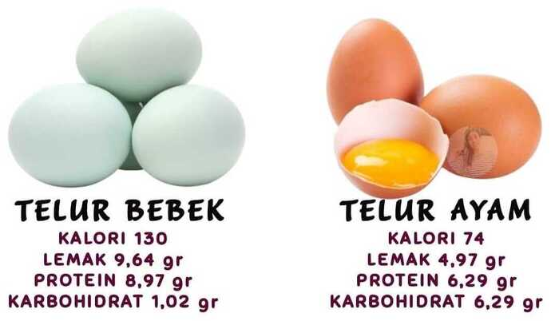
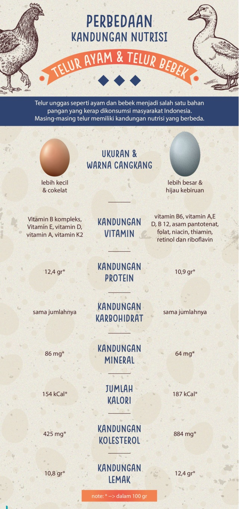
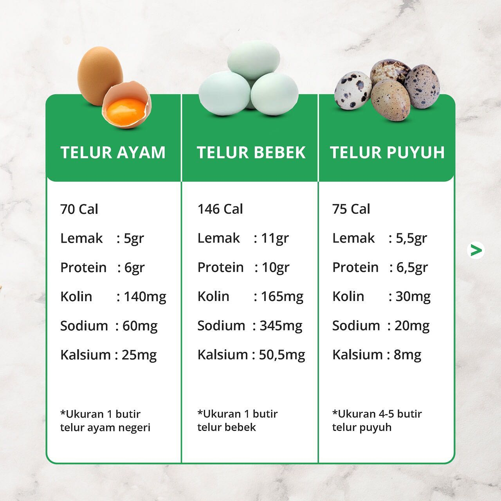
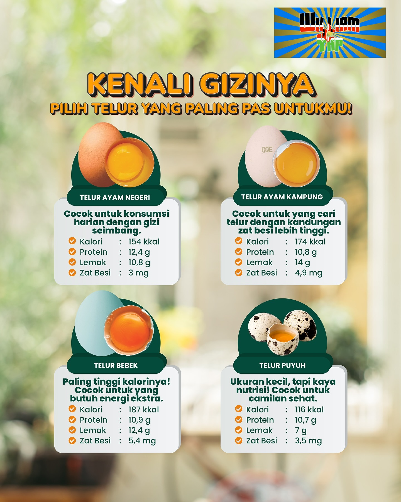
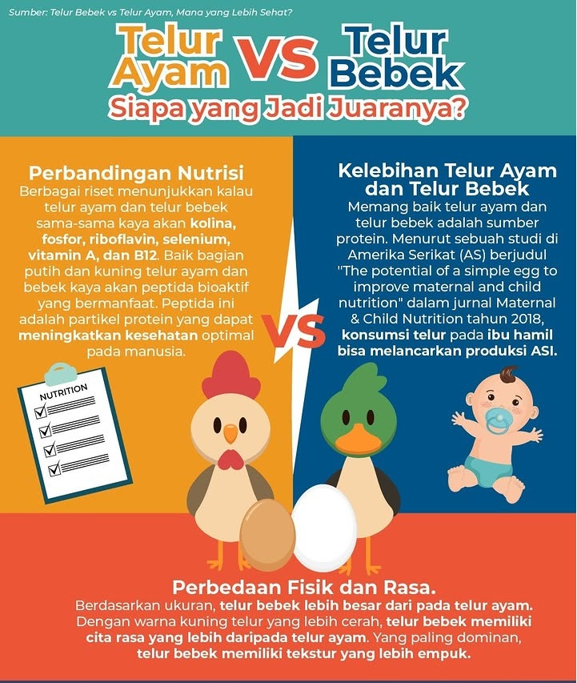
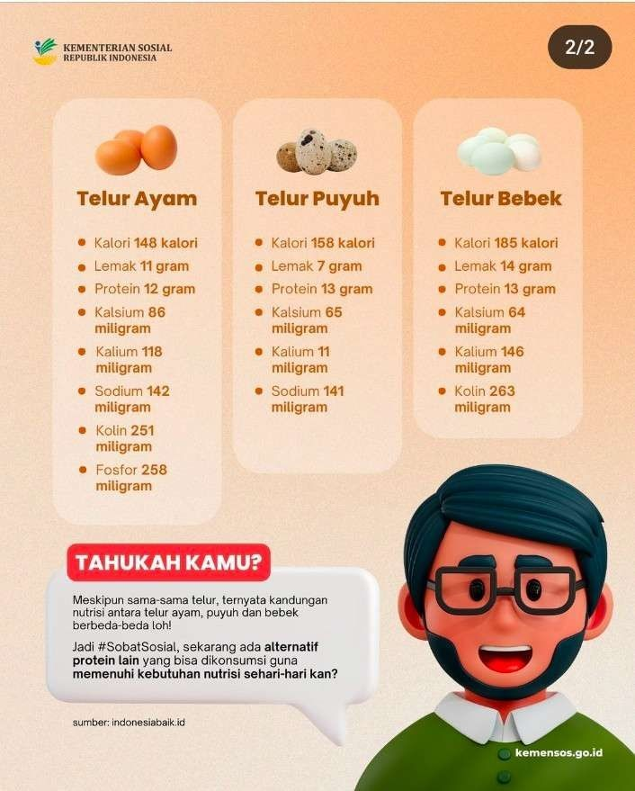
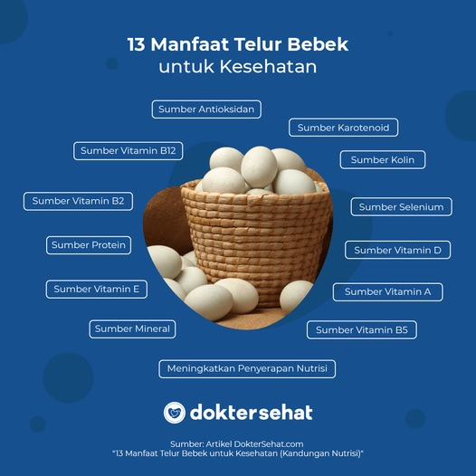

Duel nutrisi, rasa, dan kuliner. Mana yang sebenarnya juara di dapur Anda?
Ayam vs Bebek
Duel nutrisi, rasa, dan kuliner. Mana yang sebenarnya juara di dapur Anda?
Telur Ayam - Si Serbaguna
Berat Rata-rata~50 - 60 gram
Warna CangkangCoklat atau Putih
Kuning TelurKuning Sedang
Rasa Putih TelurNetral & Ringan
Telur Bebek - Si Gurih & Kaya
Berat Rata-rata~70 - 80 gram (+50% Besar!)
Warna CangkangBiru Kehijauan / Putih
Kuning TelurOranye Kemerahan (Besar)
Rasa Putih TelurKenyal & Lebih Padat
Adu Nutrisi
Data mana yang ingin Anda lihat?
143
Kalori
Telur Ayam
185
Kolesterol (mg)
Telur Ayam
185
Kalori
Telur Bebek
619
Kolesterol (mg)
Telur Bebek
Telur bebek mengandung kolesterol jauuuh lebih tinggi (hampir 3x lipat per butir) dibandingkan telur ayam. Hati-hati bagi penderita penyakit jantung!
Protein & Vitamin: Telur bebek unggul di Vitamin B12, Vitamin A, dan Omega-3. Pilihan bagus untuk pembentukan otot dan energi ekstra.
Koki Memilih: Mau Masak Apa?
Pilih masakan di bawah untuk melihat telur mana yang menang.
🥞
Martabak Telur
🥚
Telur Asin
🍰
Kue / Baking
☕
Sarapan Harian
Martabak Telur PEMENANG: Telur Bebek
Sang Raja Martabak
Telur bebek adalah kunci martabak yang istimewa. Kandungan lemaknya yang tinggi dan protein putih telur yang unik membuat isian martabak lebih padat, tidak mudah kempes, dan kulit luarnya lebih renyah. Rasanya pun jauh lebih gurih.
Padat & Renyah
Gurih Kuat
Kenapa Martabak pakai telur bebek?
Putih telur bebek lebih kental dan memiliki kadar protein albumin yang berbeda, sehingga saat dikocok dan digoreng, ia menjadi lebih kaku dan renyah. Selain itu, kuningnya yang berminyak membuat isian martabak lebih gurih dan padat (tidak kempes) dibandingkan telur ayam.
Telur Asin PEMENANG: Telur Bebek
Juaranya Telur Asin
Cangkang telur bebek memiliki pori-pori yang lebih besar, memungkinkan larutan garam meresap sempurna. Kuning telurnya yang besar dan berminyak (masir) menciptakan sensasi lumer di mulut yang tidak bisa ditandingi telur ayam.
Masir & Berminyak
Asin Creamy
Kue / Baking
Beda Kue, Beda Telur
Untuk Sponge Cake atau Bolu yang ingin sangat mengembang dan kokoh, putih telur bebek sangat baik karena struktur proteinnya. Namun, baunya yang amis dan rasanya yang berat kadang kurang cocok untuk kue modern yang "delicate". Telur ayam lebih aman untuk pemula dan kue ringan.
Ayam: Lembut / Bebek: Kokoh
Ayam: Netral / Bebek: Amis
Sarapan Harian PEMENANG: Telur Ayam
Juara Harian
Untuk sarapan sehari-hari seperti telur ceplok atau dadar ringan, telur ayam adalah pilihan terbaik. Rasanya tidak 'mahal' (terlalu berat), lebih rendah kolesterol, dan cocok dengan lidah kebanyakan orang untuk konsumsi rutin.
Lembut & Ringan
Netral & Familiar

Galeri Perbandingan Telur Ayam vs Bebek

Perbandingan visual telur ayam dan bebek

Telur bebek vs telur ayam - perbedaan ukuran dan warna

Infografis lengkap perbandingan telur

Detail perbandingan nutrisi dan karakteristik

Kelebihan masing-masing jenis telur

Kesimpulan perbandingan telur ayam dan bebek
Gambar akan berganti otomatis setiap 8 detik. Klik tombol untuk navigasi manual.
Kesimpulan Cepat
Mana yang lebih enak?
Tergantung selera! Telur bebek punya rasa "creamy" dan gurih yang jauh lebih kuat (rich) karena kandungan lemaknya yang tinggi. Telur ayam rasanya lebih ringan dan netral. Kalau Anda suka rasa yang nendang dan berani, pilih bebek. Kalau suka yang lembut dan tidak mendominasi, pilih ayam.
Apakah telur bebek aman untuk kolesterol tinggi? Sebaiknya dibatasi. Satu butir telur bebek bisa mengandung lebih dari 600mg kolesterol, yang mana itu dua kali lipat batas harian yang disarankan untuk orang sehat (300mg). Telur ayam "hanya" mengandung sekitar 185mg. Jika Anda punya riwayat kolesterol, telur ayam (atau hanya putih telurnya) adalah pilihan yang lebih aman.